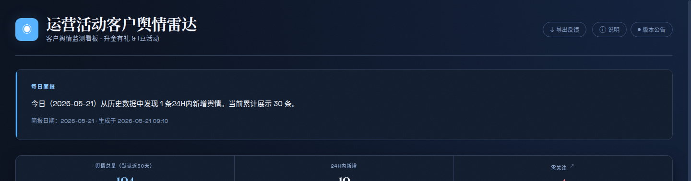

运营活动上线后，客户反馈分散在各个平台，人工巡查成本高、反应慢。本项目帮你自动搞定。
活动上线后，微博、小红书、投诉平台每天都有大量客户讨论。人工逐个平台看，费时费力还看不全。
→ 每天自动采集汇总到一张看板
负面舆情往往先在小众平台发酵，等到上了热搜才发现，已经错过了最佳处理时机。
→ 负面自动标记，一眼看到风险
业务部门想知道"这次活动口碑怎么样"，只能凭感觉回答，缺少量化的数据支撑。
→ 30天趋势 + 情感分析 + 热词统计
深色金融终端风格，数据一目了然。支持 PC、平板、手机访问。

顶部数字卡片：舆情总量、24H内新增、需关注数量。一眼判断今天舆情是否平静。
30 天舆情走势、情感分布饼图、渠道来源柱状图。量化口碑变化趋势。
今天客户讨论最多的关键词，字号越大频率越高。点击可查看 30 天趋势。
每条舆情展示标题、来源、情感、热度、互动数据。点击展开详情和原文链接。
不需要培训，打开网页按这 6 步走即可。
访问看板链接，页面自动加载今日数据。顶部数字卡片显示：今天采了多少条、新增几条、负面几条。一眼判断今天舆情是否平静。
💡 每天早上打开看板先看这 4 个数字，30 秒掌握全局热词云展示今天客户讨论最多的关键词。如果"i豆""立减金""谢谢参与"字号特别大，说明这些是当前热点话题。
💡 点击热词云中的任意词，可查看该词近 30 天的出现频率变化趋势顶部筛选栏支持「只看负面」「只看高风险」快速切换。负面帖子独立展示，按热度排序，高互动量的负面舆情优先置顶。
💡 点击"需关注"数字卡片，可直接弹出负面舆情完整列表帖子列表中点击任意舆情，展开详情面板：完整内容、原文链接（可直接跳转微博/小红书查看）、互动数据（点赞/评论/转发）。判断是否需要进一步跟进。
💡 优先关注「来源：黑猫投诉」+「情感：负面」的帖子，通常涉及具体客诉支持多维度组合筛选：来源（微博/小红书/投诉平台）+ 情感（正面/中性/负面）+ 风险等级（需关注/正常）+ 时间范围（24h内/3天内/7天内/30天内）。
💡 例如：只看「微博」+「负面」+「24h内」的帖子，了解最新风险动态表格区点击「导出 CSV」按钮，将当前筛选结果导出为 Excel 可打开的表格文件。包含日期、来源、标题、内容、情感、热度、链接等字段，方便内部流转与逐条跟进处理。
💡 建议每周五导出本周全部负面舆情，发给相关活动负责人统一跟进聚焦工行运营活动相关的客户声音，当前覆盖以下平台。
| 渠道 | 数据类型 | 更新频率 | 状态 |
|---|---|---|---|
| 微博 | 帖子、评论、热搜 | 每日 07:00 + 12:00 | 运行中 |
| 小红书 | 笔记、评论 | 每日 07:00 + 12:00 | 运行中 |
| 黑猫投诉 | 投诉工单 | 按需更新 | 运行中 |
| 论坛/社区 | 什么值得买、赚客吧等 | 按需更新 | 运行中 |
业务方最关心的问题：数据从哪里来？会不会重复？会不会漏掉？
同一舆情在微博、小红书被多次提及时，通过 URL 去重 → 标题相似度去重 → 跨天历史去重，自动合并为一条，避免重复计数。
自动过滤互助帖、广告推广、非工行内容、员工内部吐槽等低价值信息，确保看板只呈现与客户相关的有效舆情。
基于关键词匹配 + 情感词典，自动判定每条舆情的情感倾向（正面 / 中性 / 负面）。负面帖子自动标记，优先展示。
当前系统已覆盖核心的采集、分析、呈现能力，下一阶段重点从"展示"升级为"洞察"与"闭环"。